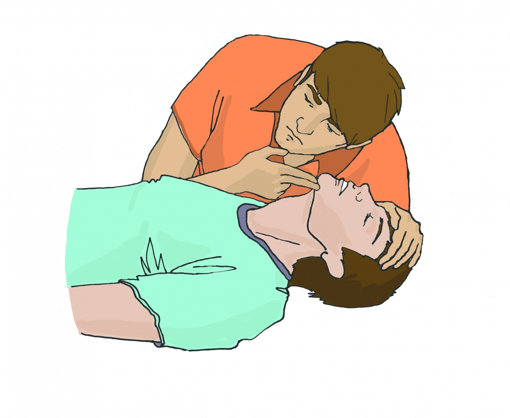
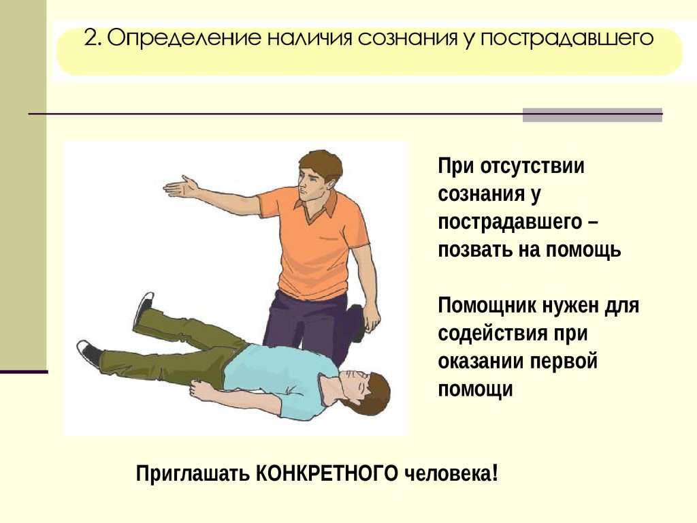
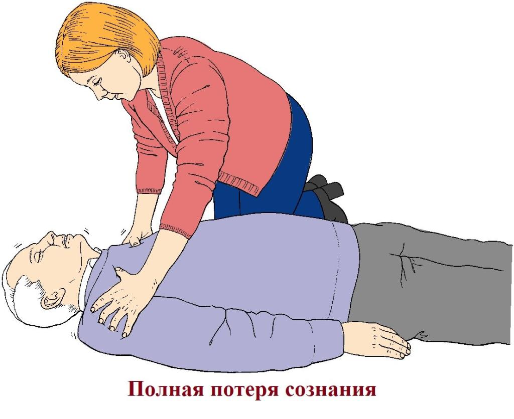
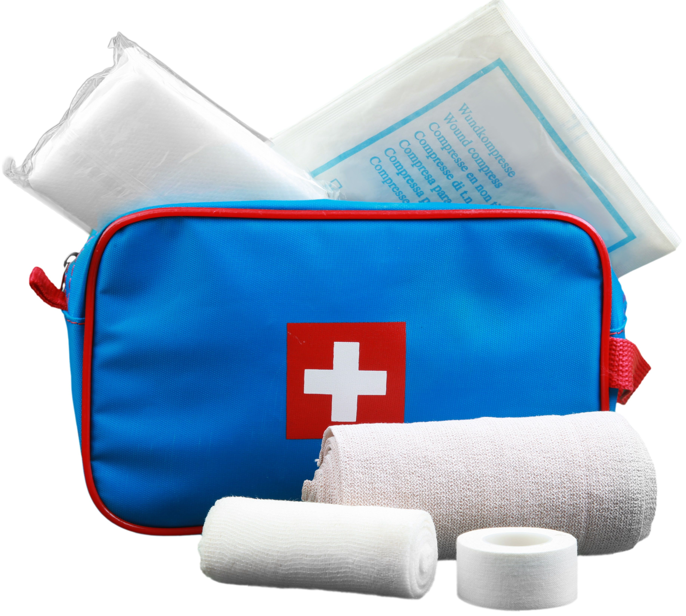
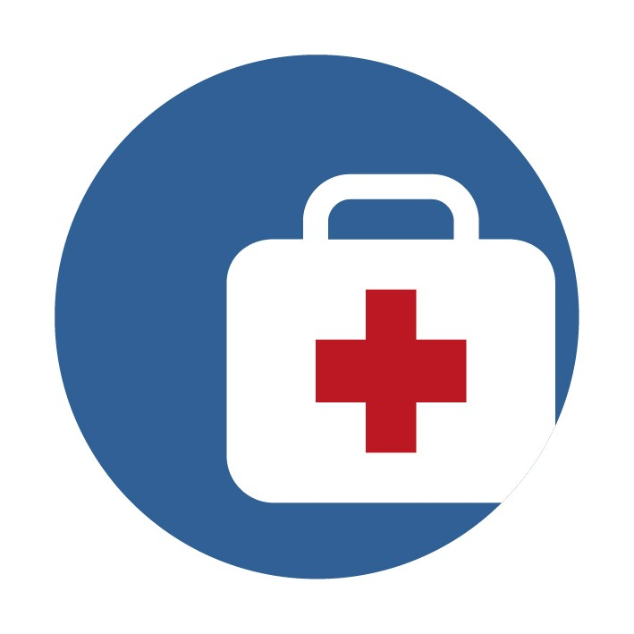

Вызвать скорую медицинскую помощь, другие специальные службы, сотрудники которых обязаны оказывать первую помощь в соответствии с федеральным законом или со специальным правилом (по тел. 03, 103 или 112, привлекая помощника или с использованием громкой связи на телефоне).
Давления руками на грудину пострадавшего,искусственного дыхания «Рот ко рту», «Рот к носу», с использованием устройств для искусственного дыхания.

Придать устойчивое боковое положение, запрокинуть голову с подъемом подбородка, выдвинуть нижнюю челюсть.

Наложением давящей повязки, пальцевым прижатием артерии, прямым давлением на рану, максимальным сгибанием конечности в суставе, наложением жгута.

Провести осмотр головы, провести осмотр шеи, провести осмотр груди, провести осмотр спины, провести осмотр живота и таза, осмотр конечностей, наложить повязки при травмах различных областей тела, в том числе окклюзионную (герметизирующую) при ранении грудной клетки, провести иммобилизацию (с помощью подручных средств, аутоиммобилизацию, с использованием медицинских изделий), зафиксировать шейный отдел позвоночника (вручную, подручными средствами, с использованием медицинских изделий), прекратить воздействие опасных химических веществ на пострадавшего (промыть желудок путем приема воды и вызывания рвоты, удалить с поврежденной поверхности и промыть поврежденные поверхности проточной водой), провести местное охлаждение при травмах, термических ожогах и иных воздействиях высоких температур или теплового излучения, провести термоизоляцию при отморожениях и других эффектах воздействия низких температур.
Для обеспечения ему комфорта и уменьшения степени его страданий.
Наличие сознания, дыхания и кровообращения
Передать пострадавшего бригаде скорой медицинской помощи, другим специальным службам, сотрудники которых обязаны оказывать первую помощь в соответствии с федеральным законом или со специальным правилом при их прибытии и распоряжении о передаче им пострадавшего, сообщив необходимую информацию.
| Виды кровотечения | Приемы оказания первой помощи |
| Капиллярное | Обработка раны бактерицидным раствором. Использование повязки и пластыря |
| Венозное | Обработка краев раны бактерицидным раствором. Наложение давящей повязки |
| Артериальное | Наложение жгута с указанием в записки времени его наложения (1,5 ч -летом, 1ч -зимой) |